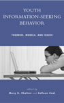

|  |
| About IR |
| Editors |
| Author instructions |
| Copyright |
| Author index |
| Subject index |
| Search |
| Reviews |
| Register |
| Home |
Chelton, Mary K. and Cool, Colleen. (Eds.), Youth Information-seeking behaviour: theories, models and issues. Lanham, MD: The Scarecrow Press, Inc., 2004. xiii, 403 p. ISBN 0 8108 4981 X. $40.
We have eagerly awaited this book on youth information seeking, as it seemed highly relevant to our courses and research. The editors have collected the essays based on exemplary research studies published in high ranking journals during the last decade or so. All of them relate to the little researched area of youth and children's information behaviour. There is a short introduction, which provides a historical overview of this research area and ties the material into a coherent whole. This is very helpful for undergraduate students and their teachers.
The thirteen presented essays are grouped chronologically 'to demonstrate the development of the literature' (p. vii-viii). Emerging topics include: information seeking in school contexts, information behaviour in life-concern situations, information searching in libraries and Web environments. The essays themselves are generally revisions of earlier, published articles. The authors provide new insights into their research results, e.g., Ross Todd and Susan Edwards incorporate Chatman's 'Theory of Information Poverty' into their essay on adolescents seeking drug-related information. Most of the authors reflect on their previous work, presenting it in new lights often using a different analytical or theoretical framework.
How useful the book is for the students will depend on whether or not they have easy access to the original articles. In the Swedish LIS educational context, the full-text databases where these articles are published are readily available. Therefore, the book is not absolutely necessary for teaching. Its primary value lies in saving the time that searching for the articles involves and the convenience of handling a nicely bound book rather than a set of loose printouts. University libraries may not wish to pay for something that they have already acquired through licensing agreements, and it is difficult to imagine student' buying something that they can get 'free' through from their institutions. As noted earlier, however, the fact that these papers have been revised may influence decisions.
Not wishing to detract from the quality of the book the essays are, indeed, excellent. They are well written and provide examples of high quality research. The editors have been discerning in their choice and have selected representative studies. There are some distinguished names missing in this selection, but there is a selected bibliography that should help the interested reader. Still, we would like to point out an obvious bias towards US research with one occasional example from Australia and Canada. The input of European researchers in this area is entirely ignored. So is the rest of the world. Why?
To some extent we could answer this question ourselves: the rest of the world rarely publishes in Anglo-Saxon high ranking journals. However, this does not mean that there are no high quality publications in English in this research field.
We would recommend this book for university libraries as long as they can afford it, but perhaps not to be included into students' obligatory reading lists. Instead, the teachers could recommend individual articles leaving student's to choose a source by themselves.
Frances Hultgren
Swedish School of Librarianship and Information Studies
Borås, Sweden
April, 2005
How to cite this review
Hultgren F. (2005). Review of: Chelton, M.K. and Cool, C. (Eds.), Youth Information-seeking behaviour: theories, models and issues. Lanham, MD: he Scarecrow Press, Inc., 2004 Information Research, 10(3), review no. R170 [Available at: http://informationr.net/ir/reviews/revs170.html]